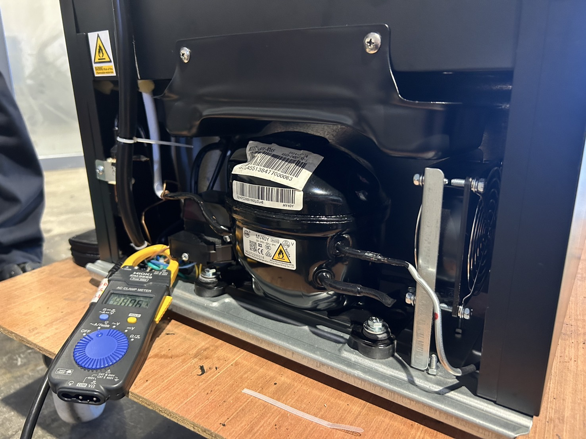
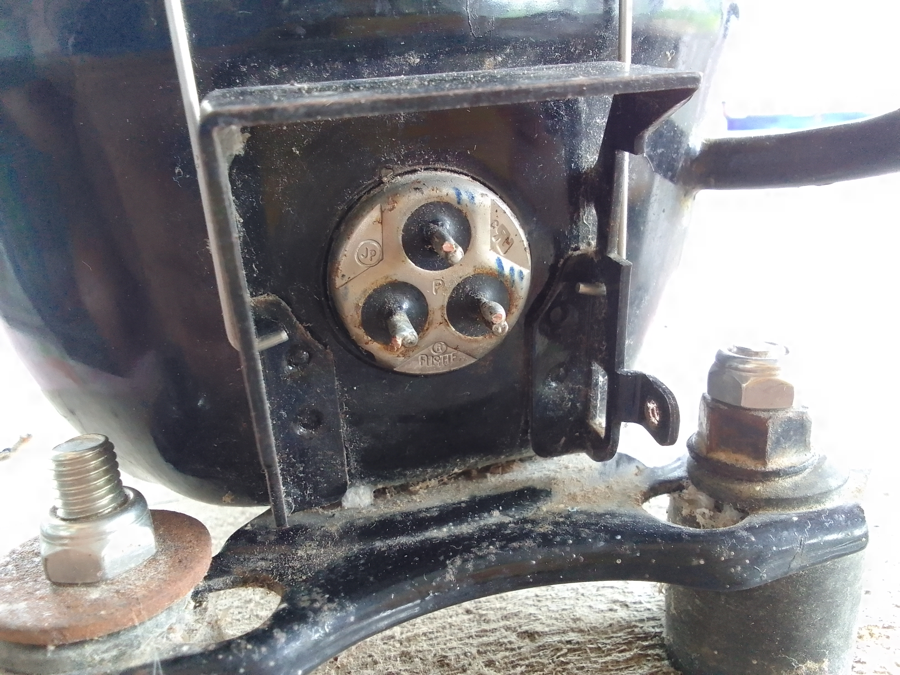

ขั้นตอนการตรวจเช็กอาการเสียของคอมเพรสเซอร์ตู้แช่
1. ตรวจสอบเบื้องต้นภายนอก
สังเกตอาการ:
-ตู้แช่ไม่เย็นเลย
-คอมเพรสเซอร์ไม่ทำงาน หรือทำงานแป๊บเดียวแล้วตัด
-ได้ยินเสียง "คลิ๊ก" จากรีเลย์หรือโอเวอร์โหลดบ่อย
-คอมเพรสเซอร์ร้อนจัดผิดปกติ
-กระแสไฟสูงเกิน หรือเบรกเกอร์ตัดบ่อย
หากพบอาการเหล่านี้ ให้เริ่มขั้นตอนต่อไป
2. ตรวจวัดกระแสของคอมเพรสเซอร์
ก่อนเริ่มการตรวจวัด ควรปิดปลั๊กและตัดไฟจากตู้แช่เพื่อความปลอดภัย จากนั้นถอดแผงฝาครอบของคอมเพรสเซอร์ออก เปิดมัลติมิเตอร์ไปที่โหมด วัดกระแสไฟ (AC Ampere) แล้วใช้ Clamp Meter หนีบที่สายไฟของคอมเพรสเซอร์ จากนั้นเสียบปลั๊กและเปิดตู้แช่เพื่อให้คอมเพรสเซอร์ทำงาน

ค่ากระแสไฟที่อ่านได้ควรสอดคล้องกับสเปกของคอมเพรสเซอร์ ซึ่งปกติจะอยู่ในช่วง 1.5A - 3A ขึ้นอยู่กับขนาดและรุ่น ซึ่งระบุในฉลาก
หากค่าที่วัดได้มีการเบี่ยงเบน:
-กระแสต่ำเกินไป → อาจเกิดจากการรั่วไหลของสารทำความเย็น
-กระแสสูงเกินไป → อาจเกิดจากการติดขัดของคอมเพรสเซอร์ หรือพัดลมระบายความร้อนไม่ทำงาน
3. ตรวจรีเลย์สตาร์ทและโอเวอร์โหลด
รีเลย์สตาร์ท (Start Relay) และโอเวอร์โหลด (Overload Protector) มักติดตั้งอยู่ด้านข้างของคอมเพรสเซอร์
-ถอดทั้งสองชิ้นออกมาและตั้งมัลติมิเตอร์ในโหมดวัดความต้านทาน (Ohm)
การวัดค่า:
รีเลย์สตาร์ท: ไม่ควรมีค่าความต้านทานสูงเกินไปหรือเปิดวงจร
โอเวอร์โหลด: ควรมีค่าความต้านทาน = 0 โอห์ม หากไม่เป็นเช่นนั้นแสดงว่าโอเวอร์โหลดเสีย
สัญญาณที่ต้องระวัง:
หากเขย่ารีเลย์แล้วได้ยินเสียงกรอบแกรบ
มีรอยไหม้ หรือรอยแตก
รีเลย์และโอเวอร์โหลดมีการสะสมของฝุ่นหรือสนิม
หากพบอาการเหล่านี้ ควรเปลี่ยนอะไหล่ทันที
4. วัดความต้านทานขดลวดคอมเพรสเซอร์
ขั้วไฟฟ้าของคอมเพรสเซอร์จะมี 3 จุด คือ C (Common), S (Start), R (Run) ซึ่งมักจะเรียงตัวในลักษณะ "สามเหลี่ยม" หรือ "แฉก"

การวัดค่า:
-วัดระหว่าง C → R
-วัดระหว่าง C → S
-วัดระหว่าง R → S
ค่าที่ได้ควรอยู่ในช่วง 1-20 โอห์ม ขึ้นอยู่กับขนาดของคอมเพรสเซอร์
-ค่าระหว่าง R → S จะเท่ากับผลรวมของ C → R และ C → S
สัญญาณของความเสียหาย:
ถ้าได้ค่า 0 โอห์ม → ขดลวดลัดวงจร
ถ้าได้ค่า OL (Open Loop) → ขดลวดขาดวงจร
5. ตรวจไฟรั่วหรือขดลวดลัดกราวด์
การตรวจนี้ทำได้โดยการวัดค่าระหว่าง ขั้ว C, R, S → ตัวถังเหล็กของคอมเพรสเซอร์
-ถ้าระบบปกติ → ค่าความต้านทานจะเป็น OL (Open Loop) หรือ ∞ โอห์ม
-ถ้าวัดได้ 0 โอห์ม หรือมีการนำไฟฟ้า → ขดลวดลัดลงกราวด์ ซึ่งต้อง เปลี่ยนคอมเพรสเซอร์ทันที